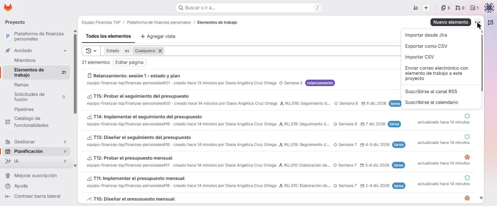
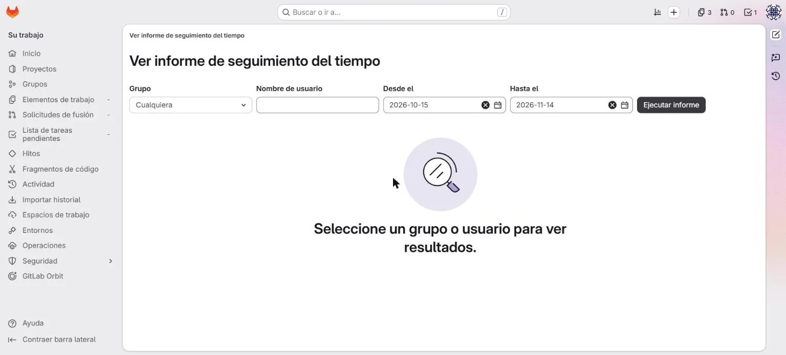
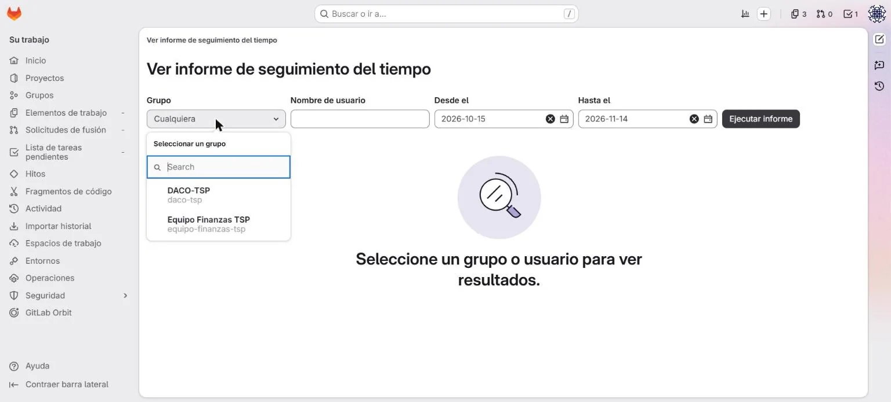
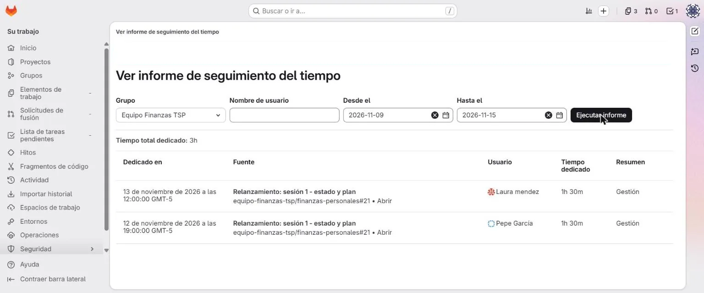
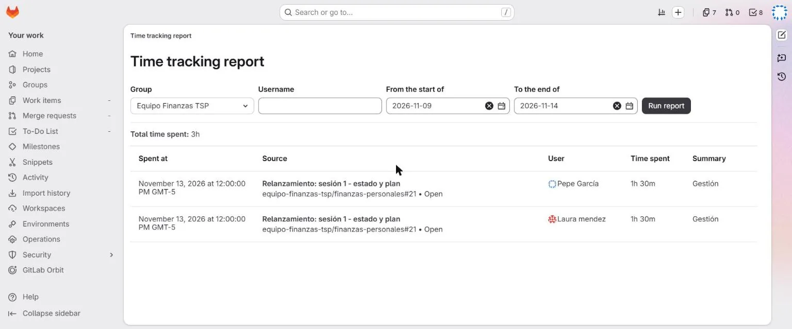

Qué se entrega
La Entrega 2 pide mostrar la evolución del proyecto desde la Entrega 1: las actas de los lanzamientos con su nombre correcto, los registros personales, el desarrollo, el avance y el resumen de la semana. Cada una de esas evidencias corresponde a un archivo:
| Evidencia | Archivo | De dónde sale | Cómo se obtiene |
|---|---|---|---|
| Plan y avance: requisitos, tareas, responsables, estimación, tiempo dedicado, fechas, hito y estado; también los defectos registrados | TSP_E2_SGxx_elementos.csv | Elementos de trabajo > Exportar como CSV | Llega como adjunto al correo de la cuenta |
| Registros personales de tiempo de todo el equipo | TSP_E2_SGxx_tiempo.pdf | Informe de seguimiento del tiempo del grupo | Se guarda desde el navegador como PDF en su computador |
| Resumen de la semana: tareas comprometidas, avance y tiempo dedicado frente al estimado | TSP_E2_SGxx_hito.pdf | Página del hito de la semana | |
| Actas del relanzamiento, con la versión 2.0 del plan | TSP_E2_SGxx_acta1.pdf, TSP_E2_SGxx_acta2.pdf | Cada acta del relanzamiento | |
| Planteamiento del proyecto actualizado | TSP_E2_SGxx_planteamiento.pdf | Wiki: Planteamiento del proyecto | |
| Equipo, roles, metas y disponibilidad | TSP_E2_SGxx_equipo.pdf | Wiki: Equipo y roles |
En los nombres, SGxx es el número de su subgrupo, por ejemplo SG05. Si hicieron una sola sesión de relanzamiento, entregan una sola acta.
Guardar una página como PDF
Varias evidencias son páginas de GitLab guardadas como PDF desde el navegador:
- Abran la página en GitLab. Para que el PDF quede más limpio, oculten el menú izquierdo con Contraer barra lateral (Collapse sidebar), abajo a la izquierda.
- Presionen Ctrl + P (en Mac, Cmd + P).
- En Destino elijan Guardar como PDF y seleccionen Guardar. Elijan la carpeta de su computador donde quedará el archivo y pónganle el nombre que indica la tabla.
Lista de elementos de trabajo
Es la lista de todos los requisitos, tareas, actas y defectos del proyecto, con una fila por elemento y columnas para el título, el estado, el hito, las etiquetas, el responsable, las fechas, la estimación (Time Estimate) y el tiempo dedicado (Time Spent).
- Vayan a Elementos de trabajo (Work items). En la barra de filtro, cambien Estado a Cualquiera (Any) para incluir también los elementos cerrados.
- Seleccionen el menú de tres puntos, al lado de Nuevo elemento, y elijan Exportar como CSV (Export as CSV).

Opción Exportar como CSV. - Confirmen con Exportar elementos de trabajo. GitLab prepara el archivo y lo envía como adjunto al correo de su cuenta en unos minutos.
- Abran el correo, descarguen el adjunto y cámbienle el nombre a
TSP_E2_SGxx_elementos.csv. Si no lo ven en la bandeja de entrada, revisen el correo no deseado.
Informe de tiempo del equipo
Es una página de GitLab que reúne todos los registros de tiempo de los integrantes del grupo en un periodo: quién trabajó, qué día, en qué elemento, cuánto tiempo y en qué fase. Es el registro de tiempo de todo el equipo en una sola página. Lo puede preparar cualquier integrante.
Esta página no aparece en los menús de GitLab; se abre con su dirección.
- Con su sesión de GitLab abierta, abran en el navegador la dirección gitlab.com/-/timelogs. Aparece la página Ver informe de seguimiento del tiempo (Time tracking report), con cuatro campos y un botón.

La página del informe antes de elegir el grupo. - Seleccionen el campo Grupo (Group) y elijan el grupo de su equipo en la lista.

La lista muestra los grupos a los que pertenecen. - Dejen vacío el campo Nombre de usuario (Username), para que aparezcan todos los integrantes. Si escriben el usuario de un compañero, GitLab puede mostrar un error.
- En Desde el (From the start of) escriban o elijan la fecha del primer registro de tiempo del equipo; en Hasta el (To the end of), la fecha de la entrega. Así el informe cubre todo el trabajo registrado.
- Seleccionen Ejecutar informe (Run report). Arriba aparece el Tiempo total dedicado y, debajo, una fila por cada registro.

Informe del grupo: cada fila es un registro de tiempo, con fecha, elemento, persona, tiempo y fase. 
La misma página con GitLab en inglés: Time tracking report, con los campos Group, Username, From the start of, To the end of y el botón Run report. - Revisen que estén los registros de todos los integrantes. Luego guarden la página como PDF, como se explica en Guardar una página como PDF, con el nombre
TSP_E2_SGxx_tiempo.pdf.
Página del hito
- Vayan a Planificación > Hitos y abran el hito de la semana que corresponde a la entrega.
- Abran el panel derecho con el botón de doble flecha, arriba a la derecha, para que se vean el porcentaje terminado y el tiempo dedicado frente al estimado.

Página del hito con el panel de avance abierto. - Guarden la página como PDF con el nombre
TSP_E2_SGxx_hito.pdf.
Actas y wiki
- Abran cada acta del relanzamiento y guárdenla como PDF:
TSP_E2_SGxx_acta1.pdfy, si hubo una segunda sesión,TSP_E2_SGxx_acta2.pdf. Si el acta es larga, seleccionen Leer más antes de imprimir para que se vea completa. - Abran la página de la wiki Planteamiento del proyecto y guárdenla como
TSP_E2_SGxx_planteamiento.pdf. - Abran la página Equipo y roles y guárdenla como
TSP_E2_SGxx_equipo.pdf.
Cómo subir los archivos
- Suban los archivos sueltos, uno por uno, en la misma entrega. No los suban dentro de una carpeta ni comprimidos.
- Antes de subir, abran cada archivo y revisen que se vea completo.
- La entrega la sube un integrante del equipo; los demás revisan que haya quedado completa.
- Se consideran participantes de la entrega los integrantes que tienen registros a su nombre en el proyecto: tiempo, tareas o actas.
Cómo se evalúa
La Entrega 2 se califica con esta rúbrica. Cada criterio tiene un peso, y en cada uno se asigna el nivel que mejor describe lo que muestran los archivos: Completo (100 % del peso), Adecuado (70 %), Parcial (40 %) o Ausente (0 %). La nota es la suma de los criterios.
| Criterio y peso | Completo | Adecuado | Parcial | Ausente |
|---|---|---|---|---|
| Montaje del proyecto y wiki 15 % | El grupo tiene a todos los integrantes con su nombre completo; hay un hito por semana con sus fechas, las cinco etiquetas y las dos plantillas, incluida la que creó el equipo; la wiki tiene el planteamiento y el equipo con roles, metas y disponibilidad, actualizados frente a la Entrega 1. | Falta uno de esos elementos o la wiki no está actualizada frente a la Entrega 1. | Faltan varios elementos o la wiki está incompleta. | El proyecto no está montado o no tiene wiki. |
| Requisitos 15 % | Los requisitos del ciclo están registrados como issues con la etiqueta requisito, con historia de usuario y criterios de aceptación verificables, coherentes con la Entrega 1. | Los requisitos están registrados, pero a algunos les faltan criterios de aceptación o la etiqueta. | Solo hay algunos requisitos, o están sin historia de usuario ni criterios. | No hay requisitos registrados. |
| Plan de tareas 25 % | Las tareas están dentro de su requisito, cada una con responsable, estimación, fechas, hito, fase y evidencia de terminación; la carga de cada integrante por semana es coherente con su disponibilidad. | Las tareas están completas, salvo en algunos datos, o la carga de algún integrante no es coherente con su disponibilidad. | Las tareas están sueltas o les faltan varios datos (responsable, estimación o fechas). | No hay plan de tareas en GitLab. |
| Registro de tiempo 20 % | Todos los integrantes registran su tiempo desde el inicio de la semana, en el elemento de trabajo que corresponde, con fecha y con la fase escrita como en la tabla de fases. | Todos registran, pero hay registros sin fase, con la fase mal escrita o en elementos que no corresponden. | Solo algunos integrantes registran tiempo, o los registros se concentran en uno o dos días. | No hay registros de tiempo. |
| Actas del relanzamiento 15 % | Cada sesión tiene su acta con el nombre de relanzamiento, asistentes, temas tratados, decisiones (incluida la versión 2.0 del plan con su motivo y efecto) y compromisos; los participantes registraron su tiempo en el acta. | Las actas están, pero les falta la versión 2.0 del plan, las decisiones o los compromisos. | El acta está incompleta o no se identifica como relanzamiento. | No hay actas. |
| Errores detectados y resumen de la semana 5 % | Los errores encontrados están registrados con la etiqueta defecto, con sus fases; el PDF del hito muestra el avance y el tiempo dedicado frente al estimado. | Hay registro de errores o resumen de la semana, pero uno de los dos está incompleto. | Solo uno de los dos está presente. | No hay ninguno de los dos. |
| Archivos de la entrega 5 % | Están todos los archivos, sueltos, con los nombres indicados, y cada uno se abre completo. | Falta un archivo o algún nombre no sigue la indicación. | Faltan varios archivos o vienen en carpetas o comprimidos. | No se entregaron los archivos de GitLab. |
La calificación del equipo se asigna a cada integrante que tiene registros a su nombre en el proyecto: tiempo, tareas o actas.